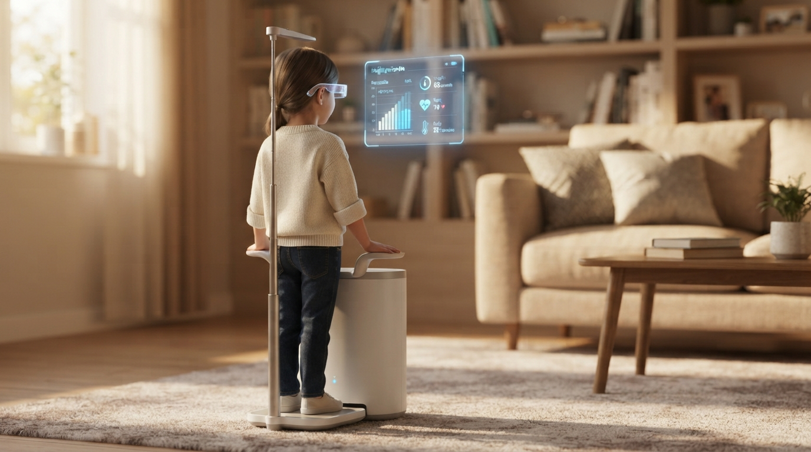

BUSINESS PRESENTATION
올라가기만 해도,
건강이 보여요
AI 기반 건강 스캔 플랫폼
15조 바이탈사인 · 2026
01
우리가 찾은 문제
건강 상태를 알기 위해
병원에 가야 하는
번거로움과 시간 낭비
핵심 인사이트
현재 건강 상태를 확인하려면 병원을 방문해야 하며, 이 과정에서 시간과 비용이 불필요하게 소비됩니다. 집에서 간편하게 건강을 체크할 수 있는 시스템이 절실합니다.
02
우리의 질문
AI를 사용해
올라가기만 해도
현재 건강 상태를 알려주는 기계
기존 방식
병원 방문 → 대기 → 검사 → 결과 확인 → 복잡한 과정
우리의 방식
기기에 올라가기만 → AI 분석 → 즉시 결과 확인 → 간편하고 빠름
03
우리의 캠페인
01
집에서도 간편하게
02
AI가 실시간 분석
03
누구나 쉽게 관리
올라가기만 해도 AI가 현재 건강 상태를 알려줘요. 집에서 편하게, 누구나 쉽게 건강 관리하기
04
우리가 만든 것

AI 건강 스캔 기계
안경과 혈압 측정 기능을 결합한 통합 건강 스캔 장치입니다. 기기에 올라가기만 하면 혈압, 무릎 반사, 안경 데이터를 한 번에 확인할 수 있습니다.
제작 내용
AI 건강 스캔 기계 (안경 + BMI 기계 모양, 단색 배경)
무릎 신경반사 검사
기기에 앉으면 무릎 반사 반응을 정밀하게 측정합니다. 반사각 · 반사 강도 · 신경 반응 속도를 분석해 신경 건강 상태를 즉시 확인할 수 있어요.
05
가장 특별한 부분 — 스마트 안경 👓
건강검사 결과를
기계 화면이 아닌 안경에
보여줍니다
기존 방식
기계 화면에 크게 표시 → 다른 사람에게도 보일 수 있음
우리의 방식
안경에 표시 → 자신만 확인 가능
안경을 쓰면 자신의 건강정보를 다른 사람에게 보여주지 않고 자신만 확인할 수 있습니다
06
기능 01 — 안경 데이터 기록화
안경에 나온 기록을
데이터화
안경에서 수집된 시력, 사용 시간, 눈 피로도 등의 데이터를 정밀하게 기록하고 분석합니다.
📊 기록 항목
시력 변화 추이 · 눈 사용 시간 · 피로도 지수 · 렌즈 착용 패턴
데이터 활용
기록된 데이터를 바탕으로 눈 건강 추이를 추적하고, 시력 저하 가능성을 미리 예측합니다.
07
기능 02 — 혈압 측정
혈압
을 잴 수 있는 기능
기기에 올라가기만 하면 수축기·이완기 혈압을 비침습적으로 측정합니다. 매번 병원 갈 필요가 없어요.
📊 측정 항목
수축기 혈압 · 이완기 혈압 · 혈압 변동률 · 평균 혈압
정밀 측정
초음파 및 안면 정맥 자율신경계 분석을 통해 혈압을 정밀하게 확인합니다.
08
기능 03 — 데이터 확대: 맥박·혈당·척추건강
안경에 띄울수 있는 데이터를
늘려요
💓
맥박
🩸
혈당
🦴
척추건강
🧠
스트레스
맥박, 혈당, 척추건강 등 다양한 건강 데이터를 안경에 실시간으로 표시합니다.
09
기능 04 — 카메라 자세 분석
카메라로
자세 분석
척추 정렬 유무와 밸런스 체크를 실시간으로 수행합니다. 이상 시 즉시 경고합니다.
📊 분석 항목
척추 정렬 · 어깨 균형 · 밸런스 체크 · 자세 교정 여부
조기 경고
카메라 영상으로 몸의 외형적 정렬과 뼈대의 균형을 확인하고, 이상 징후를 미리 감지합니다.
10
기능 05 — 과거 데이터 비교 & 분석
전과 비교해서
더 나아진 점
과
더 안 좋아진 점
을 찾어요
📈 나아진 점
혈압 감소 · 체중 개선 · 자세 교정 · 스트레스 감소
📉 안 좋아진 점
혈당 상승 · 체중 증가 · 자세 악화 · 피로도 증가
분석 결과
과거 데이터와 비교하여 변화 추이를 시각화하고, 핵심 지표의 방향성을 한눈에 보여줍니다.
11
스마트렌즈 체험 🔮
스마트렌즈로
건강 데이터를
떠올려보세요
마우스를 움직이면 시점이 바뀌고, 스크롤로 데이터 페이지를 넘길 수 있어요
체험 시작 ➡️
📊
혈압
120/80 mmHg
💓
맥박
72 bpm
🩸
혈당
95 mg/dL
12
기능 06 — 해결방법 & 추천 생활방식
데이터를 바탕으로
해결방법
과
추천 생활방식
을 제공해요
📋
맞춤 추천
데이터 기반 개인 맞춤 생활 습관을 제안합니다
🏃
운동 계획
상태에 맞는 운동 루틴을 추천합니다
🍎
식단 관리
건강 데이터에 맞는 식단을 제안합니다
13
종합: 데이터 기반 건강 관리
모든 데이터를 하나로 모아
종합 관리
합니다
12
측정 항목
4
핵심 기능
AI
분석 엔진
0
침습 제로
플랫폼 요약
12가지 건강 항목을 비침습적으로 측정하고, AI가 분석하여 과거 비교, 이상 경고, 해결책을 제공하는 통합 건강 관리 플랫폼입니다.
14
이렇게 실천해요
📅 오늘부터 할 수 있는 일
건강 관리를 일상에 통합해 보세요
👥 친구들과 함께 할 수 있는 일
함께 건강을 챙기면 더 효과적이에요
1
기기에 올라가기
건강 스캔 기기에 앉습니다
2
AI가 분석하기
카메라와 센서가 데이터를 수집합니다
3
결과 확인하기
바로 건강 상태와 추천을 확인합니다
15
퀴즈 🧠
본 플랫폼에서 카메라와 비전 AI 기술을 활용하여 정밀하게 측정 및 분석하는 신체 항목은 무엇인가요?
A. 날숨 속 바이오마커 분석
B. 무채혈 광학 혈당 수치
C. 음성 톤 기반 스트레스 수치
D. 척추 균형 및 전신 자세 상태
💡 힌트: 몸의 외형적 정렬과 뼈대의 균형을 카메라 영상으로 확인하는 기술입니다.
확인 ➡️
16
퀴즈 결과 🧠
확인 ➡️
17
정답 분석 📊
📷
카메라 & 비전 AI
🎯
정밀 측정
🔍
신체 항목 분석
다음 ➡️
18
퀴즈 🧠
스마트 건강 진단 플랫폼에서 피를 뽑지 않고(비침습) 혈당 수치를 측정하기 위해 활용되는 핵심 기술은 무엇인가요?
A. 광학 기술
B. 비전 AI 카메라
C. 초음파 분석
D. 호흡 센서
확인 ➡️
19
퀴즈 결과 🧠
확인 ➡️
20
정답 분석 📊
다음 ➡️
들어주셔서 감사합니다
‹
›
SMART LENS
EXIT ⏏
마우스를 움직여 고개를 돌려보세요 · 휠로 건강 정보를 넘겨보세요 · ESC로 종료
SMART LENS EXPERIENCE
마우스를 움직이면 방 안을 둘러볼 수 있어요
휠을 움직여 건강 정보를 넘겨보세요
데이터를 클릭하면 상세 내용을 볼 수 있습니다
START EXPERIENCE